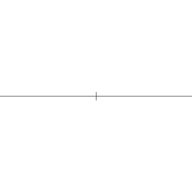
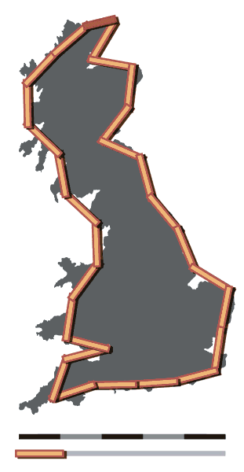

Mathematopia
by Zhaorui Xu

Compass and Straightedge
By Aldoaldoz - Own work , CC BY-SA 3.0, Link
Squaring the Circle

Coastline Paradox

By Avsa, CC BY-SA 3.0, Link

Fractals

Hillbert's Grand Hotel
By Cezary P - own work, CC BY-SA 3.0, Link

By Jan Beránek - own work, CC BY-SA 3.0, Link
Seven Bridges of Königsberg

By Bogdan Giuşcă - based on the image, CC BY-SA 3.0, Link

By Booyabazooka, CC BY-SA 3.0, Link
Pigeonhole Principle

By McKay, BenFrantzDale, CC BY-SA 3.0, Link